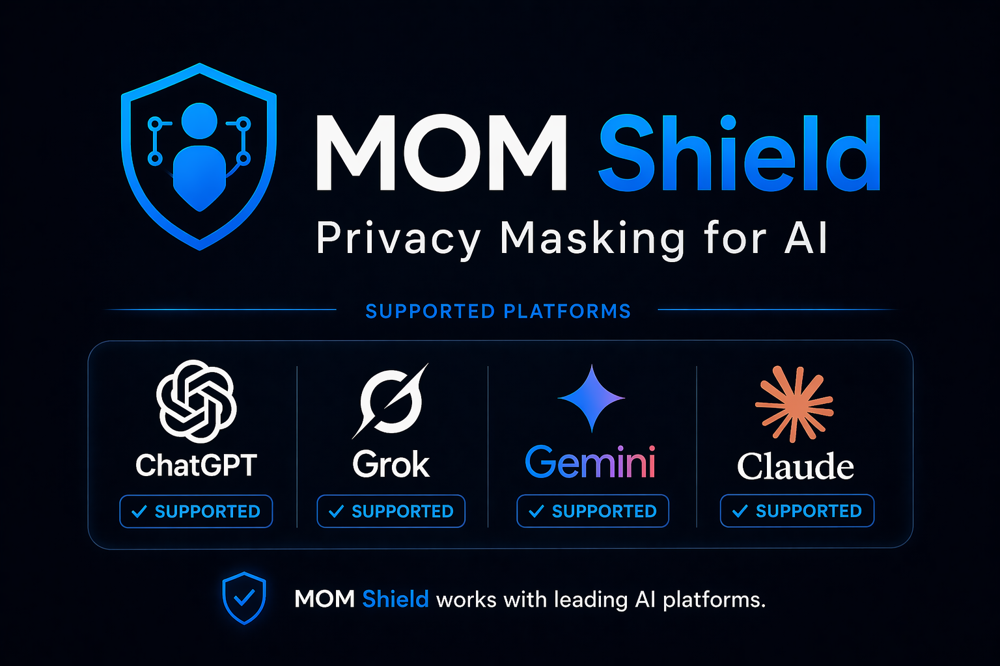

Prompt masking
Automatically masks supported values before clicking Send, pressing Enter, or submitting a supported chat form.

Privacy Masking for AI
Mask sensitive data locally before it reaches ChatGPT, Claude, Gemini, or Grok. MOM Shield helps you work with AI while reducing accidental exposure of personal data, credentials, and document content.
Product demo
The demo shows how sensitive client data is turned into placeholders before the prompt is submitted to an AI chat.
Core protection
MOM Shield replaces detected personal and sensitive values with placeholders before supported prompts or files are submitted.
Automatically masks supported values before clicking Send, pressing Enter, or submitting a supported chat form.
Processes supported text, DOCX, XLSX, and text-based PDF files locally before the AI chat service receives them.
Blocks maskable uploads when processing fails, so unsupported files do not pass through unchanged in strict mode.
Optionally keeps local placeholder mappings so masked responses can be restored on your device.
Detects common secrets such as API keys, tokens, JWTs, password fields, and bearer authorization values.
Supports names, email addresses, phone numbers, IBANs, addresses, IDs, and financial values in matching contexts.
Screenshots
These screenshots show the extension state, manual masking controls, protected uploads, and the masked prompt sent to the AI service.


Flow
Enter a prompt or select a supported file inside a supported AI chat website.
MOM Shield checks the content locally in your browser using built-in detection rules.
Detected sensitive values are replaced with structured placeholders before submission.
The AI service receives the masked prompt or replacement upload, not the detected original values.
Supported AI chats